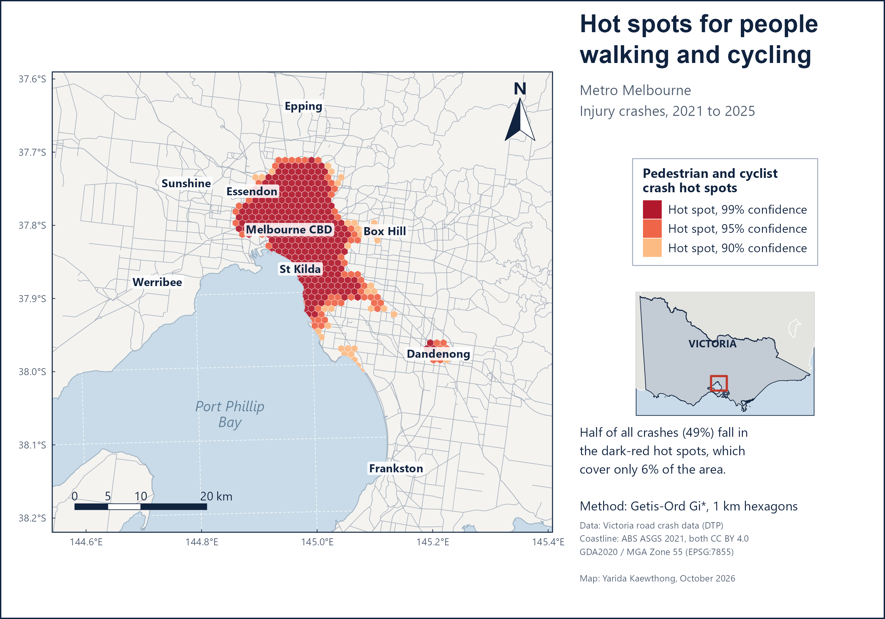
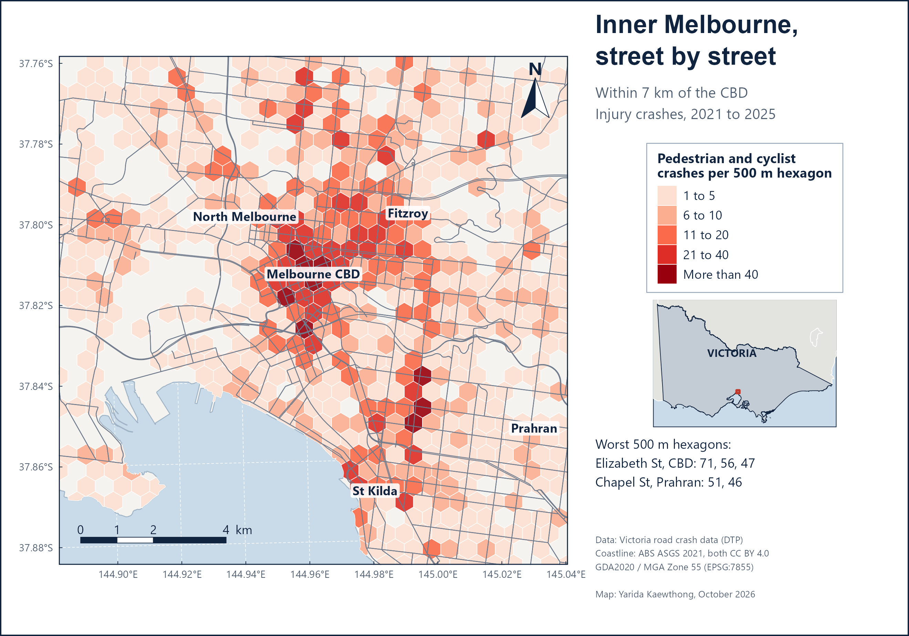
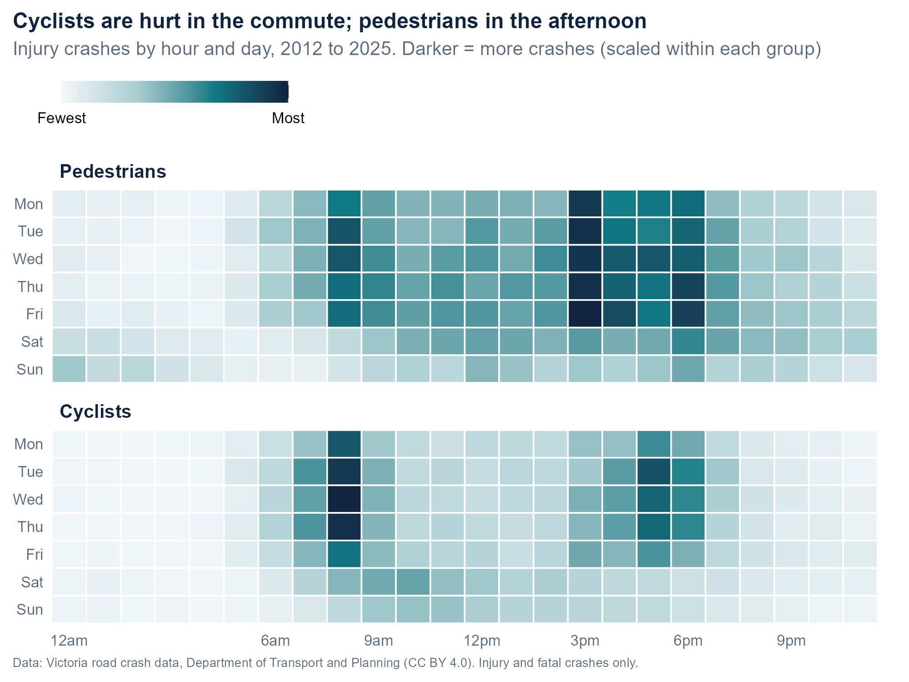
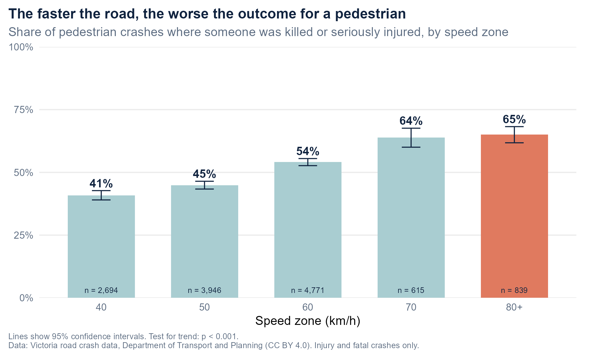
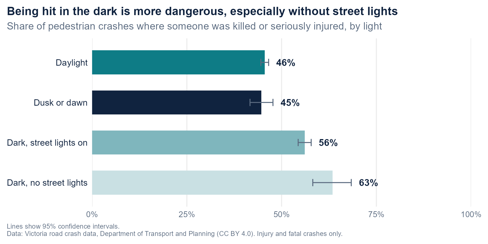

01 / GIS · R · Road safety
Where and when are people walking and cycling most at risk in Melbourne?
People on foot and on bikes have no protection in a crash. I analysed 14 years of real Victorian crash records, more than 30,000 crashes involving a pedestrian or cyclist, to find where they cluster, when they happen, and what turns a crash into a death or serious injury.
metro Melbourne, 2012–2025
covering 6% of the map
from 40 to 80+ km/h zones
The question
In metro Melbourne, roughly one injury crash in five involves someone walking or cycling. To protect them, a council or road agency needs to know three things: where to act, when the risk peaks, and what makes a crash more severe.
- Where do pedestrian and cyclist crashes cluster, beyond what chance would produce?
- At what times of day and week do they happen, and is it the same for both groups?
- How much do the speed zone and lighting change the chance of a serious outcome?
The data
Victoria's official road crash records, published by the Department of Transport and Planning from police and hospital reports (CC BY 4.0). Every crash has a location, time, speed zone, light condition, crash movement and severity. I kept metro Melbourne from 2012 to 2025, logged every filtering step, and projected the points to GDA2020 / MGA Zone 55 so distances are in metres.
| Step | Records | Note |
|---|---|---|
| All Victorian crashes | 200,754 | 2012 to January 2026 |
| Metro Melbourne, full years | 142,875 | Partial January 2026 and 3 non-injury records removed |
| Involving a pedestrian | 14,378 | At least one pedestrian in the crash |
| Involving a cyclist | 16,357 | At least one cyclist in the crash |
| Hot-spot window, 2021–2025 | 10,428 | Pedestrian or cyclist crashes |
What the data showed
-
01
Half the crashes happen in 6% of the map. A Getis-Ord Gi* test on 1 km hexagons found 273 statistically significant (99%) hot spots. They cover 6% of the area but hold 49% of the 2021–2025 pedestrian and cyclist crashes, mostly in the City of Melbourne, Yarra and Port Phillip, with a separate cluster in Dandenong.
-
02
Faster roads, worse injuries. The share of pedestrian crashes that killed or seriously injured someone rose from 41% in 40 km/h zones to 54% at 60 km/h and 65% at 80 km/h and above (χ² test for trend = 274.9, p < 0.001).
-
03
Cyclists are hurt in the commute, pedestrians in the afternoon. Cyclist crashes peak at 8 am on weekdays. Pedestrian crashes peak at 3 pm, around school pick-up time. Being hit in the dark without street lights raised the serious-injury share to 63%, against 46% in daylight.
-
04
Dooring is a major cyclist risk. Riding into the opened door of a parked car was the second most common cyclist crash movement: 1,822 crashes, 11% of the total.
On the map
Each map is laid out like a GIS export: framed map with latitude and longitude, north arrow, scale bar, legend, a locator map of Victoria and full credits. Click any map to enlarge it.


When and how badly



Pedestrian and cyclist injury crashes in Melbourne, 2012 to 2025
How it was done
Hot spots, not just dots. A dot map shows where crashes happened, not whether a cluster is unusual. I built a 1 km hexagon grid over every area with at least one crash and ran Getis-Ord Gi*, which compares each hexagon and its neighbours within 2 km against the metro average and returns a z-score. Hexagons above 2.58 are hot spots at 99% confidence.
Zoom in where it matters. Inside the hot-spot zone everything is significant, so for the inner city I switched to plain counts on a finer 500 m grid and named the worst cells by their most common road.
Severity with honest uncertainty. Serious-injury shares come with 95% Wilson confidence intervals, and a chi-square test for trend checks that the rise across speed zones is not chance.
What it suggests
- Lower speeds where people walk. Moving from 60 to 40 km/h is linked to 13 fewer serious injuries in every 100 pedestrian crashes. Extending 40 km/h zones across the inner-city hot spots targets the places with the most crashes.
- Protected bike lanes and door-zone design on the commuter routes into the CBD, Yarra and Port Phillip.
- Street lighting where pedestrian crashes happen in the dark with no lights.
Worth stating up front
- Injury crashes only. Crashes with property damage only are not in the open data.
- No exposure measure. There is no count of how many people walk or cycle in each area, so hot spots partly reflect where people walk and cycle most. They show where crashes concentrate, not where each trip is riskiest.
- Association, not cause. Faster roads also differ in design and traffic, so the speed result is a strong pattern, not a controlled experiment.
- Many tests at once. Gi* is not adjusted for multiple testing, so the 90% band is indicative only.